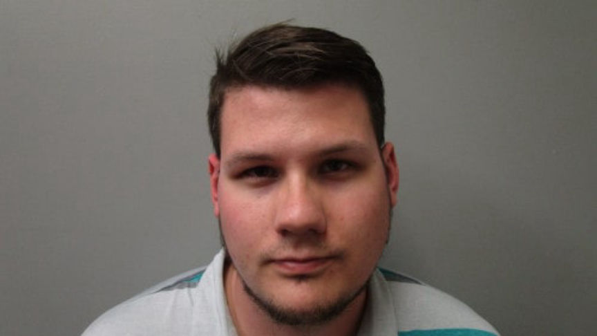
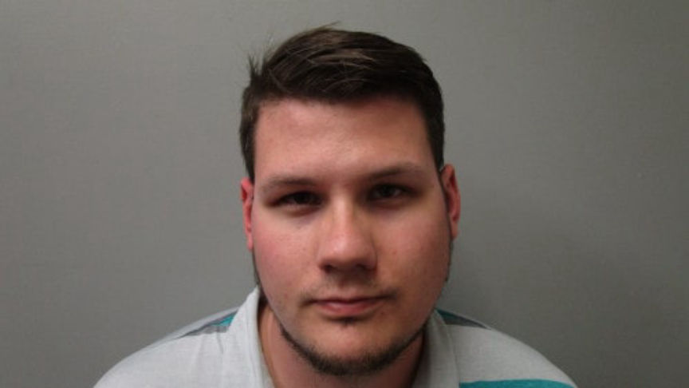

Alabama Man Admits Using "Largest Darknet Child Porn Site"
~3 min read | Published on 2019-11-16, tagged Child-Porn, Pleaded-Guilty using 517 words.
The U.S. Attorney’s Office Northern District of Alabama announced that 29 year old Ryan Thomas Carver pleaded guilty to possession of a collection of pictures and videos depicting child sexual abuse. According to court documents, Carver purchased child abuse content from Welcome to Video, a now-defunct dark web “the largest darknet child pornography website” according to the United States Department of Justice.
Carver’s arrest resulted from the takedown of Welcome To Video, which according to authorities was the largest child sexual exploitation Darknet marketplace by volume of content. The site sold child exploitation videos to its users for bitcoin. Each of the site’s users received a unique bitcoin address after opening an account. The bitcoin addresses were used to send bitcoins to purchase the child exploitation images.
According to court documents, on March 5, 2018, agents from the IRS-CI, HSI, National Crime Agency, and Korean National Police in South Korea arrested the owner of Welcome to Video and seized its server. The operation resulted in the seizure of approximately eight terabytes of child sexual exploitation videos. The agencies also retrieved data from the seized server and shared it with law enforcement around the world to aid in identifying and prosecuting suspects who purchased from the site.
From the data seized in the takedown of the site, the HSI recovered evidence that indicated that Carver had sent bitcoins to one of the site’s addresses. On the same day the site was takedown HSI agents raided Carver’s home in Huntsville, Alabama. The agents seized Carver’s electronic devices and arrested him. On analyzing the electronic devices, the investigators found a total of 180 “identified series of child pornography,” which included 3,102 pictures, 162 videos, and 45 identified victims.
Carver was consequently charged with one count of possession of child pornography that he pleaded guilty to on November 14, 2019.
Speaking during the announcement of Carver’s guilty plea U.S. Attorney Jay E. Town said, “Criminals who victimize our children through digital pixels, videos, or photos should expect a visit from federal law enforcement. It’s not a question of if, but when. And when we find you, we will prosecute you and you will go to federal prison.”
Speaking on behalf of the HSI Assistant Special Agent in Charge of Alabama James G. Hernandez said, “HSI and its law enforcement partners are committed to protecting those among us that are the most vulnerable. HSI uses all of the tools and technology available to ensure that criminals find no refuge in the Darknet.”
Carver’s sentencing hearing will be held on March 13, 2020. He faces a maximum sentence of 20 years in prison and a fine of $250,000.
In addition to Carver and the admin of Welcome To Video, 336 additonal suspects were arrested worldwide in connection with the site. In the US the operation resulted in searches of residences and businesses of approximately 92 individuals. Tens of suspects were subsequently arrested and charged. The operation also helped rescue at least 23 minor victims residing in the United States, Spain, and the United Kingdom, who were being abused by the users of the site.
Carver’s arrest resulted from the takedown of Welcome To Video, which according to authorities was the largest child sexual exploitation Darknet marketplace by volume of content. The site sold child exploitation videos to its users for bitcoin. Each of the site’s users received a unique bitcoin address after opening an account. The bitcoin addresses were used to send bitcoins to purchase the child exploitation images.
Ryan Carver as Pictured in His Booking Photo
According to court documents, on March 5, 2018, agents from the IRS-CI, HSI, National Crime Agency, and Korean National Police in South Korea arrested the owner of Welcome to Video and seized its server. The operation resulted in the seizure of approximately eight terabytes of child sexual exploitation videos. The agencies also retrieved data from the seized server and shared it with law enforcement around the world to aid in identifying and prosecuting suspects who purchased from the site.
From the data seized in the takedown of the site, the HSI recovered evidence that indicated that Carver had sent bitcoins to one of the site’s addresses. On the same day the site was takedown HSI agents raided Carver’s home in Huntsville, Alabama. The agents seized Carver’s electronic devices and arrested him. On analyzing the electronic devices, the investigators found a total of 180 “identified series of child pornography,” which included 3,102 pictures, 162 videos, and 45 identified victims.
Carver was consequently charged with one count of possession of child pornography that he pleaded guilty to on November 14, 2019.
Speaking during the announcement of Carver’s guilty plea U.S. Attorney Jay E. Town said, “Criminals who victimize our children through digital pixels, videos, or photos should expect a visit from federal law enforcement. It’s not a question of if, but when. And when we find you, we will prosecute you and you will go to federal prison.”
Speaking on behalf of the HSI Assistant Special Agent in Charge of Alabama James G. Hernandez said, “HSI and its law enforcement partners are committed to protecting those among us that are the most vulnerable. HSI uses all of the tools and technology available to ensure that criminals find no refuge in the Darknet.”
Carver’s sentencing hearing will be held on March 13, 2020. He faces a maximum sentence of 20 years in prison and a fine of $250,000.
In addition to Carver and the admin of Welcome To Video, 336 additonal suspects were arrested worldwide in connection with the site. In the US the operation resulted in searches of residences and businesses of approximately 92 individuals. Tens of suspects were subsequently arrested and charged. The operation also helped rescue at least 23 minor victims residing in the United States, Spain, and the United Kingdom, who were being abused by the users of the site.